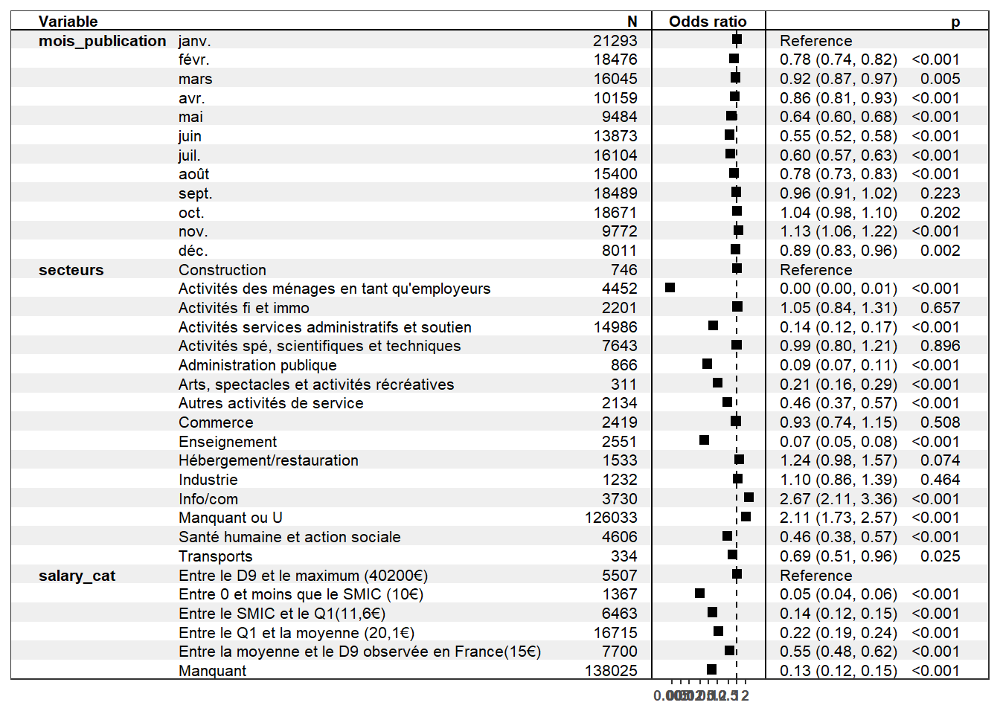
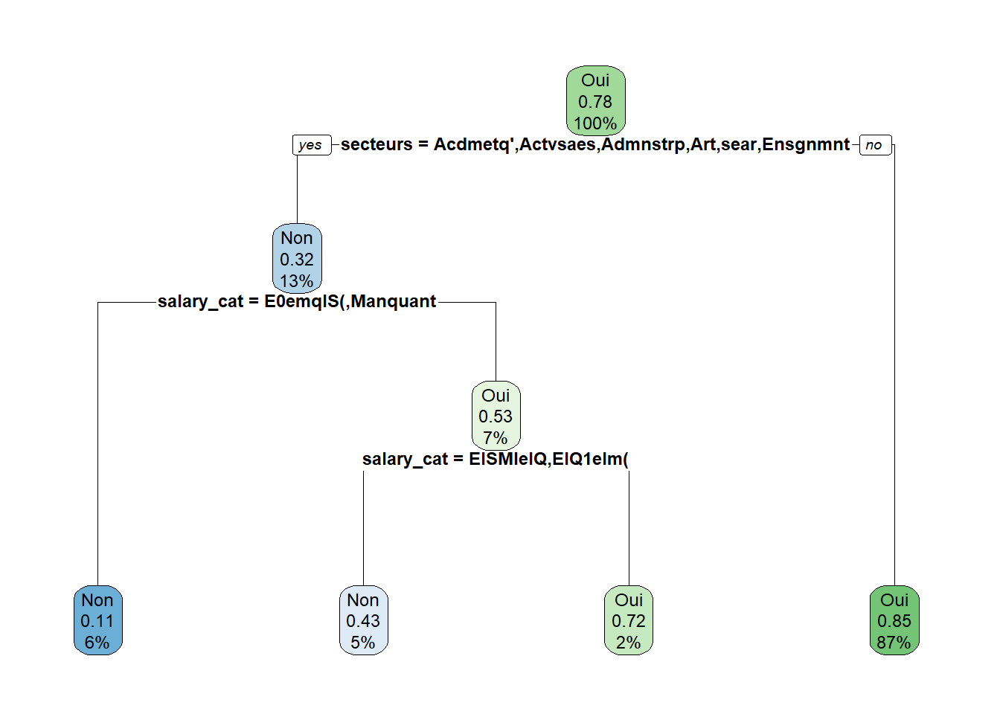
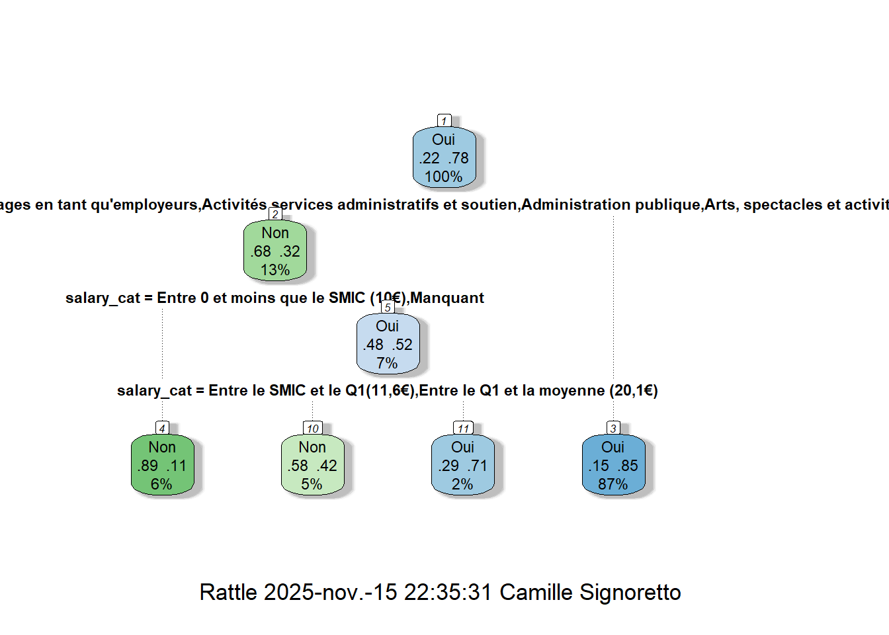
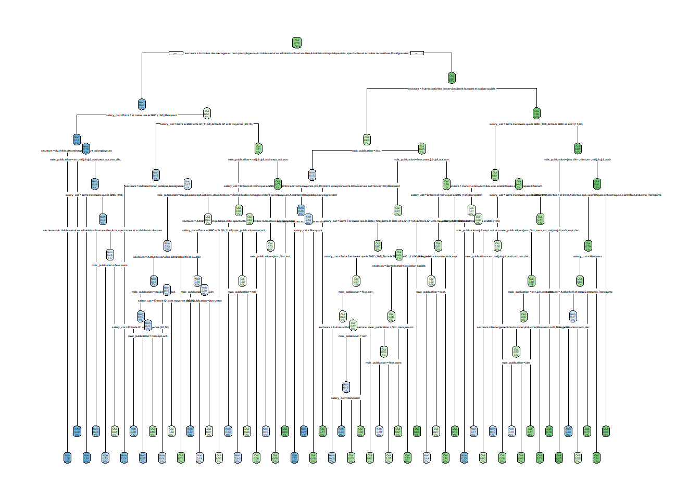

13Modèles de régression : application sur les offres de Pôle emploi 2020
On cherche maintenant à expliquer un phénomène ou une variable par rapport à d’autres. On va ici s’intéresser au fait qu’une offre de Pôle emploi corresponde à un CDI ou non.
On va repartir de la base OffresPE_2020 en réduisant le champ pour améliorer les temps de calcul, par exemple en ne s’intéressant qu’à Paris, puis en retravaillant un peu les variables avant de lancer les modèles de régression.
13.1 La création des bases d’apprentissage et de test
On crée notre base de travail en ne prenant que les variables qui nous intéressent, dont certaines retravaillées avant (création de variables catégorielles plus pertinentes dans une régression logistique). La fonction relevel() permet d’indiquer la modalité de référence que l’on veut dans les régressions futures, ici pour la régression logistique.
library(fancycut)library(janitor)library(tidyverse)OffresPE_2020 <-readRDS("data/OffresPE_2020.Rdata") OffresPE_2020$salary_cat <-fancycut(OffresPE_2020$salary_hourly_mean,"Entre 0 et moins que le SMIC (10€)"="(0, 10]","Entre le SMIC et le Q1(11,6€)"="(10, 11.6]", "Entre le Q1 et la moyenne (20,1€)"="(11.6, 20.1]","Entre la moyenne et le D9 observée en France(15€)"="(20.1, 28]","Entre le D9 et le maximum (40200€)"="(28, 40200)",na.bucket ="Manquant")OffresPE_2020 %>%tabyl(salary_cat) %>%adorn_pct_formatting()
salary_cat n percent
Entre 0 et moins que le SMIC (10€) 3489 0.8%
Entre le SMIC et le Q1(11,6€) 21857 5.2%
Entre le Q1 et la moyenne (20,1€) 46964 11.2%
Entre la moyenne et le D9 observée en France(15€) 17356 4.1%
Entre le D9 et le maximum (40200€) 10933 2.6%
Manquant 319923 76.1%
<NA> 1 0.0%
OffresPE_reg <- OffresPE_2020 %>%filter(location_departement=="75") %>%mutate(mois_publication=months(date_sitePublicationDay, abbreviate = T),mois_publication=factor(mois_publication,levels =c("janv.", "févr.", "mars", "avr.", "mai", "juin", "juil.", "août", "sept.", "oct.", "nov.", "déc.")),secteurs=as.factor(case_when(entrepriseSecteur_NAF21 %in%c("C", "D", "E") ~"Industrie", entrepriseSecteur_NAF21 =="F"~"Construction", entrepriseSecteur_NAF21 =="G"~"Commerce", entrepriseSecteur_NAF21 =="H"~"Transports", entrepriseSecteur_NAF21 =="I"~"Hébergement/restauration", entrepriseSecteur_NAF21 =="J"~"Info/com", entrepriseSecteur_NAF21 %in%c("K", "L") ~"Activités fi et immo", entrepriseSecteur_NAF21 =="M"~"Activités spé, scientifiques et techniques", entrepriseSecteur_NAF21 =="N"~"Activités services administratifs et soutien", entrepriseSecteur_NAF21 =="O"~"Administration publique", entrepriseSecteur_NAF21 =="P"~"Enseignement", entrepriseSecteur_NAF21 =="Q"~"Santé humaine et action sociale", entrepriseSecteur_NAF21 =="R"~"Arts, spectacles et activités récréatives", entrepriseSecteur_NAF21 =="S"~"Autres activités de service", entrepriseSecteur_NAF21 =="T"~"Activités des ménages en tant qu'employeurs",TRUE~"Manquant ou U")),CDI =as.factor(case_when(contractType =="CDI"~"Oui",TRUE~"Non")),salary_cat=relevel(salary_cat, ref="Entre le D9 et le maximum (40200€)"),secteurs=relevel(secteurs, ref="Construction")) %>%select(mois_publication, salary_cat, CDI, secteurs)
De manière traditionnelle, dans les modèles de prédiction ou machine learning, on n’applique pas le modèle sur l’ensemble de la base de données mais d’abord sur un échantillon dit d’apprentissage puis on le “teste” sur l’échantillon restant. On va donc ici suivre ce schéma et diviser notre base de données en deux pour avoir un échantillon d’apprentissage ou d’entraînement, et un autre test.
On utilise pour cela la fonction sample (mais d’autres fonctions existent) en lui spécifiant la façon de diviser la base avec l’argument prob= : ici on choisit de diviser notre base selon un rapport 70% vs 30%, autrement dit notre base d’apprentissage comprendra 70% des données de la base initiale, alors que la base de test comprendra les 30% restants. On pourrait procéder à un rapport du type 80% vs 20%, ou 75% vs 25%, etc.
# On choisit la façon de diviser notre base et on l'applique en créant 2 basessample <-sample(c(TRUE, FALSE), nrow(OffresPE_reg), replace=TRUE, prob=c(0.70,0.3))OffresPE_train <- OffresPE_reg[sample, ]OffresPE_test <- OffresPE_reg[!sample, ]# On regarde quelle est la taille de nos deux basesdim(OffresPE_train)
[1] 122721 4
dim(OffresPE_test)
[1] 53056 4
# On vérifie que les proportions de notre variable d'intérêt sont assez proches# entre les deux baseslibrary(gt)OffresPE_train %>%tabyl(CDI) %>%adorn_pct_formatting() %>%adorn_totals("row") %>%gt()
Les deux bases présentent une répartition CDI/pas CDI très proche : dans le 75, environ 78% des offres d’emploi émises sur le site de Pôle emploi sont en CDI.
13.2 Un modèle à visée principale explicative : la régression logistique
La fonction glm du package stats (à installer avant appel dans la librarie) est principalement utilisée pour modéliser différents types de régression : l’argument family=binomial("logit") permet d’utiliser un modèle logit.
# install.packages("stats")library(stats)
13.2.1 Le modèle initial
On crée le modèle en spécifiant la variable d’intérêt puis les variables explicatives ou l’ensemble des variables présentes dans la base si nous avons déjà procédé à une sélection des variables : c’est le cas ici donc c’est pour cela que l’on indique juste un “.” après le “~”, sinon on devrait écrire les variables une par une, ou les sctoker dans une liste et appeler la liste.
Même si ce type modèle doit permettre essentiellement d’expliquer un phénomène, ici qu’une offre d’emploi soit en CDI ou non, on peut l’utiliser aussi pour prédire les données. C’est pourquoi nous appliquons d’abord le logit sur la base (réduite) d’apprentissage.
logit_1 <-glm (CDI ~ ., data=OffresPE_train, family =binomial("logit"))summary(logit_1)
Call:
glm(formula = CDI ~ ., family = binomial("logit"), data = OffresPE_train)
Coefficients:
Estimate Std. Error
(Intercept) 3.25121 0.13833
mois_publicationfévr. -0.24326 0.03369
mois_publicationmars -0.08301 0.03615
mois_publicationavr. -0.13230 0.04179
mois_publicationmai -0.42510 0.04019
mois_publicationjuin -0.59124 0.03512
mois_publicationjuil. -0.51631 0.03425
mois_publicationaoût -0.25396 0.03608
mois_publicationsept. -0.04728 0.03525
mois_publicationoct. 0.05072 0.03560
mois_publicationnov. 0.11835 0.04289
mois_publicationdéc. -0.09063 0.04338
salary_catEntre 0 et moins que le SMIC (10€) -3.00999 0.10293
salary_catEntre le SMIC et le Q1(11,6€) -1.98207 0.07720
salary_catEntre le Q1 et la moyenne (20,1€) -1.52066 0.07126
salary_catEntre la moyenne et le D9 observée en France(15€) -0.62506 0.07817
salary_catManquant -2.02500 0.07021
secteursActivités des ménages en tant qu'employeurs -5.46553 0.20280
secteursActivités fi et immo 0.08410 0.13630
secteursActivités services administratifs et soutien -1.89332 0.12052
secteursActivités spé, scientifiques et techniques 0.05586 0.12496
secteursAdministration publique -2.40557 0.15038
secteursArts, spectacles et activités récréatives -1.56473 0.18364
secteursAutres activités de service -0.74113 0.13080
secteursCommerce -0.02899 0.13274
secteursEnseignement -2.63228 0.13206
secteursHébergement/restauration 0.22845 0.14255
secteursIndustrie 0.11582 0.14846
secteursInfo/com 1.07413 0.14245
secteursManquant ou U 0.78993 0.12090
secteursSanté humaine et action sociale -0.74112 0.12422
secteursTransports -0.25463 0.19726
z value Pr(>|z|)
(Intercept) 23.503 < 2e-16
mois_publicationfévr. -7.222 5.14e-13
mois_publicationmars -2.296 0.02167
mois_publicationavr. -3.166 0.00155
mois_publicationmai -10.576 < 2e-16
mois_publicationjuin -16.833 < 2e-16
mois_publicationjuil. -15.076 < 2e-16
mois_publicationaoût -7.038 1.95e-12
mois_publicationsept. -1.341 0.17983
mois_publicationoct. 1.425 0.15423
mois_publicationnov. 2.760 0.00579
mois_publicationdéc. -2.089 0.03669
salary_catEntre 0 et moins que le SMIC (10€) -29.244 < 2e-16
salary_catEntre le SMIC et le Q1(11,6€) -25.673 < 2e-16
salary_catEntre le Q1 et la moyenne (20,1€) -21.339 < 2e-16
salary_catEntre la moyenne et le D9 observée en France(15€) -7.997 1.28e-15
salary_catManquant -28.843 < 2e-16
secteursActivités des ménages en tant qu'employeurs -26.951 < 2e-16
secteursActivités fi et immo 0.617 0.53724
secteursActivités services administratifs et soutien -15.709 < 2e-16
secteursActivités spé, scientifiques et techniques 0.447 0.65487
secteursAdministration publique -15.996 < 2e-16
secteursArts, spectacles et activités récréatives -8.521 < 2e-16
secteursAutres activités de service -5.666 1.46e-08
secteursCommerce -0.218 0.82712
secteursEnseignement -19.932 < 2e-16
secteursHébergement/restauration 1.603 0.10901
secteursIndustrie 0.780 0.43533
secteursInfo/com 7.540 4.70e-14
secteursManquant ou U 6.534 6.42e-11
secteursSanté humaine et action sociale -5.966 2.43e-09
secteursTransports -1.291 0.19678
(Intercept) ***
mois_publicationfévr. ***
mois_publicationmars *
mois_publicationavr. **
mois_publicationmai ***
mois_publicationjuin ***
mois_publicationjuil. ***
mois_publicationaoût ***
mois_publicationsept.
mois_publicationoct.
mois_publicationnov. **
mois_publicationdéc. *
salary_catEntre 0 et moins que le SMIC (10€) ***
salary_catEntre le SMIC et le Q1(11,6€) ***
salary_catEntre le Q1 et la moyenne (20,1€) ***
salary_catEntre la moyenne et le D9 observée en France(15€) ***
salary_catManquant ***
secteursActivités des ménages en tant qu'employeurs ***
secteursActivités fi et immo
secteursActivités services administratifs et soutien ***
secteursActivités spé, scientifiques et techniques
secteursAdministration publique ***
secteursArts, spectacles et activités récréatives ***
secteursAutres activités de service ***
secteursCommerce
secteursEnseignement ***
secteursHébergement/restauration
secteursIndustrie
secteursInfo/com ***
secteursManquant ou U ***
secteursSanté humaine et action sociale ***
secteursTransports
---
Signif. codes: 0 '***' 0.001 '**' 0.01 '*' 0.05 '.' 0.1 ' ' 1
(Dispersion parameter for binomial family taken to be 1)
Null deviance: 128999 on 122720 degrees of freedom
Residual deviance: 102623 on 122689 degrees of freedom
AIC: 102687
Number of Fisher Scoring iterations: 6
Certaines modalités des variables ne sont pas significatives (voir les étoiles), mais la grande majorité le sont.
On va donc l’appliquer maintenant à la base test, en créant des indicateurs mesurant le taux de prédiction ou au contraire d’erreur.
Le modèle predict permet d’abord d’abord de calculer la probabilité qu’une offre d’emploi soit en CDI pour chaque offre, l’argument type="response" permettant d’appliquer le modèle logistique. Il est plus intéressant d’avoir la probabilité d’une variable de type qualitative, “oui”/“non” comme la variable d’intérêt du modèle, il faut donc procéder à une transformation aboutissant à une nouvelle variable (on considère alors que si la probabilité est strictement supérieure à 0.50 alors cela équivaut à une modalité “oui”). Enfin, on crée une matrice de confusion qui est en réalité un tableau croisé entre les valeurs observées et les prédicitions du modèle ; et on calcule un taux d’erreur en rapportant la somme des éléments hors diagonale principale à la somme des observations totales (de la matrice donc).
# Modèle de prédiction pour récupérer les probabilités individuelles d'être en couplepred.proba <-predict(logit_1, newdata = OffresPE_test, type="response")# On transforme les probas en variable qualitativepred.moda <-factor(case_when(pred.proba>0.5~"oui", TRUE~"non"))# On crée la matrice de confusionmatrice_conf <-table(OffresPE_test$CDI, pred.moda)matrice_conf
pred.moda
non oui
Non 4564 7144
Oui 1607 39741
# On calcule le taux d'erreurtx_erreur <- (matrice_conf[2,1]+matrice_conf[1,2])/sum(matrice_conf)tx_erreur *100
[1] 16.49389
On voit que parmi la modalité observée “Oui” de la base de données, le modèle prédit environ 39 000 oui soit 96% de cette modalité, c’est la grande majorité ; la prédiction est moins bonne si on regarde la modalité “Non”, puisque environ 4 500 observations, soit 39% de cette modalité, se retrouvent bien en “non”. Le taux d’erreur de 16,3% montre bien néanmoins que le modèle prédit plutôt bien.
Une autre façon de faire est d’ajouter, après les deux premières étapes réécrites ici, la variable de prédiction à la table initiale et de créer une nouvelle variable qui indique si on a bien une correspondance entre les modalités des deux variables : l’initiale et celle prédite. Cela nous donne donc le taux d’erreur calculé au-dessus, on retrouve bien 16,3% de correspondances inexactes.
# Modèle de prédiction pour récupérer les probabilités individuelles d'être en couple#pred.proba <- predict(logit_1, newdata = OffresPE_test, type="response")# On transforme les probas en variable qualitative#pred.moda <- factor(case_when(pred.proba>0.5 ~ "oui", TRUE ~ "non"))# On ajoute la variable de prédiction dans la table test initialeOffresPE_test_bis <-cbind.data.frame(OffresPE_test, var_predict=pred.moda)# et on créer une variable indiquant ou non la correspondance entre# les modalités des deux variablesOffresPE_test_bis %>%mutate(predict_OK=as.factor(case_when(CDI=="Oui"& var_predict=="oui"~"oui", CDI=="Non"& var_predict=="non"~"oui",TRUE~"non"))) %>%tabyl(predict_OK) %>%adorn_pct_formatting() %>%adorn_totals("row")
predict_OK n percent
non 8751 16.5%
oui 44305 83.5%
Total 53056 -
# On supprime la table créée en testrm(OffresPE_test_bis)
13.2.2 L’évaluation du modèle et la recherche éventuelle d’un “meilleur” modèle
On peut améliorer le modèle en recherchant celui qui est le “meilleur” en faisant une sélection sur les variables, plus précisément en demandant au modèle de choisir les variables les plus explicatives, car peut-être que certaines ne sont pas nécessaires à l’explication du modèle (dans notre cas, nous avons néanmoins vu que toutes les variables étaient significatives donc a priori utiles dans le modèle).
Pour une sélection “pas à pas”, il faut utiliser le package MASS et la fonction stepAIC car c’est à travers le critère AIC (“Akaike Information Criterion”,) que le modèle va chercher à être “meilleur” : plus il sera faible, meilleur il sera. On va d’abord faire cette sélection de façon “descendante” c’est-à-dire en partant du modèle initial “logit_1” ici : on part du modèle avec l’ensemble des variables et on en supprime une au fur et à mesure pour voir si le modèle est “meilleur”.
Call: glm(formula = CDI ~ mois_publication + salary_cat + secteurs,
family = binomial("logit"), data = OffresPE_train)
Coefficients:
(Intercept)
3.25121
mois_publicationfévr.
-0.24326
mois_publicationmars
-0.08301
mois_publicationavr.
-0.13230
mois_publicationmai
-0.42510
mois_publicationjuin
-0.59124
mois_publicationjuil.
-0.51631
mois_publicationaoût
-0.25396
mois_publicationsept.
-0.04728
mois_publicationoct.
0.05072
mois_publicationnov.
0.11835
mois_publicationdéc.
-0.09063
salary_catEntre 0 et moins que le SMIC (10€)
-3.00999
salary_catEntre le SMIC et le Q1(11,6€)
-1.98207
salary_catEntre le Q1 et la moyenne (20,1€)
-1.52066
salary_catEntre la moyenne et le D9 observée en France(15€)
-0.62506
salary_catManquant
-2.02500
secteursActivités des ménages en tant qu'employeurs
-5.46553
secteursActivités fi et immo
0.08410
secteursActivités services administratifs et soutien
-1.89332
secteursActivités spé, scientifiques et techniques
0.05586
secteursAdministration publique
-2.40557
secteursArts, spectacles et activités récréatives
-1.56473
secteursAutres activités de service
-0.74113
secteursCommerce
-0.02899
secteursEnseignement
-2.63228
secteursHébergement/restauration
0.22845
secteursIndustrie
0.11582
secteursInfo/com
1.07413
secteursManquant ou U
0.78993
secteursSanté humaine et action sociale
-0.74112
secteursTransports
-0.25463
Degrees of Freedom: 122720 Total (i.e. Null); 122689 Residual
Null Deviance: 129000
Residual Deviance: 102600 AIC: 102700
La sortie n’affiche que le “meilleur” modèle, et c’est donc bien celui qu’on avait mis avec l’ensemble des variables.
Pour une sélection des variables de façon “ascendante”, en partant d’un modèle sans variable puis on ajoute une à une les variables. On utilise la même fonction mais en changeant les paramètres et en créant un modèle “vide” avant :
Call: glm(formula = CDI ~ secteurs + salary_cat + mois_publication,
family = binomial("logit"), data = OffresPE_train)
Coefficients:
(Intercept)
3.25121
secteursActivités des ménages en tant qu'employeurs
-5.46553
secteursActivités fi et immo
0.08410
secteursActivités services administratifs et soutien
-1.89332
secteursActivités spé, scientifiques et techniques
0.05586
secteursAdministration publique
-2.40557
secteursArts, spectacles et activités récréatives
-1.56473
secteursAutres activités de service
-0.74113
secteursCommerce
-0.02899
secteursEnseignement
-2.63228
secteursHébergement/restauration
0.22845
secteursIndustrie
0.11582
secteursInfo/com
1.07413
secteursManquant ou U
0.78993
secteursSanté humaine et action sociale
-0.74112
secteursTransports
-0.25463
salary_catEntre 0 et moins que le SMIC (10€)
-3.00999
salary_catEntre le SMIC et le Q1(11,6€)
-1.98207
salary_catEntre le Q1 et la moyenne (20,1€)
-1.52066
salary_catEntre la moyenne et le D9 observée en France(15€)
-0.62506
salary_catManquant
-2.02500
mois_publicationfévr.
-0.24326
mois_publicationmars
-0.08301
mois_publicationavr.
-0.13230
mois_publicationmai
-0.42510
mois_publicationjuin
-0.59124
mois_publicationjuil.
-0.51631
mois_publicationaoût
-0.25396
mois_publicationsept.
-0.04728
mois_publicationoct.
0.05072
mois_publicationnov.
0.11835
mois_publicationdéc.
-0.09063
Degrees of Freedom: 122720 Total (i.e. Null); 122689 Residual
Null Deviance: 129000
Residual Deviance: 102600 AIC: 102700
Le taux d’AIC diminue à chaque variable ajoutée donc le meilleur modèle est bien celui avec l’ensemble des variables explicatives mises dans le modèle initial.
13.2.3 Le modèle final et l’interprétation des résultats
Finalement, dans une visée plus explicative que prédictive, on peut estimer notre modèle sur l’ensemble de la base et étudier plus précisément les résultats avec les odds-ratios ou rapports des côtes par exemple pour commenter plus directement les coefficients. Ces odds-ratios correspondent à l’exponentiel des coefficients initiaux de la régression. Ils se lisent par rapport à 1 : il est égale à 1 si les deux côtes sont identiques donc s’il n’y a pas de différence de probabilité d’être en couple selon qu’on est une femme ou un homme, il est supérieur à 1 si ici la femme a une probabilité supérieure à celle de l’homme d’être en couple, et il est inférieur à 1 si la femme a une probabilité inférieure à celle de l’homme d’être en couple.
Call:
glm(formula = CDI ~ mois_publication + secteurs + salary_cat,
family = binomial("logit"), data = OffresPE_reg)
Coefficients:
Estimate Std. Error
(Intercept) 3.30724 0.11585
mois_publicationfévr. -0.24882 0.02816
mois_publicationmars -0.08493 0.03020
mois_publicationavr. -0.14604 0.03481
mois_publicationmai -0.44965 0.03356
mois_publicationjuin -0.60217 0.02931
mois_publicationjuil. -0.51310 0.02866
mois_publicationaoût -0.24978 0.03016
mois_publicationsept. -0.03594 0.02952
mois_publicationoct. 0.03782 0.02966
mois_publicationnov. 0.12515 0.03592
mois_publicationdéc. -0.11433 0.03625
secteursActivités des ménages en tant qu'employeurs -5.48375 0.16835
secteursActivités fi et immo 0.05077 0.11449
secteursActivités services administratifs et soutien -1.93861 0.10133
secteursActivités spé, scientifiques et techniques -0.01373 0.10501
secteursAdministration publique -2.44177 0.12610
secteursArts, spectacles et activités récréatives -1.55451 0.15528
secteursAutres activités de service -0.77534 0.11004
secteursCommerce -0.07397 0.11182
secteursEnseignement -2.68917 0.11107
secteursHébergement/restauration 0.21455 0.12019
secteursIndustrie 0.09091 0.12411
secteursInfo/com 0.98187 0.11908
secteursManquant ou U 0.74847 0.10171
secteursSanté humaine et action sociale -0.77013 0.10452
secteursTransports -0.36407 0.16240
salary_catEntre 0 et moins que le SMIC (10€) -3.01931 0.08534
salary_catEntre le SMIC et le Q1(11,6€) -1.98949 0.06406
salary_catEntre le Q1 et la moyenne (20,1€) -1.52587 0.05904
salary_catEntre la moyenne et le D9 observée en France(15€) -0.60596 0.06488
salary_catManquant -2.03906 0.05817
z value Pr(>|z|)
(Intercept) 28.547 < 2e-16
mois_publicationfévr. -8.837 < 2e-16
mois_publicationmars -2.812 0.004919
mois_publicationavr. -4.195 2.72e-05
mois_publicationmai -13.397 < 2e-16
mois_publicationjuin -20.547 < 2e-16
mois_publicationjuil. -17.900 < 2e-16
mois_publicationaoût -8.282 < 2e-16
mois_publicationsept. -1.217 0.223428
mois_publicationoct. 1.275 0.202174
mois_publicationnov. 3.485 0.000493
mois_publicationdéc. -3.154 0.001610
secteursActivités des ménages en tant qu'employeurs -32.573 < 2e-16
secteursActivités fi et immo 0.443 0.657406
secteursActivités services administratifs et soutien -19.131 < 2e-16
secteursActivités spé, scientifiques et techniques -0.131 0.895944
secteursAdministration publique -19.363 < 2e-16
secteursArts, spectacles et activités récréatives -10.011 < 2e-16
secteursAutres activités de service -7.046 1.84e-12
secteursCommerce -0.661 0.508325
secteursEnseignement -24.211 < 2e-16
secteursHébergement/restauration 1.785 0.074251
secteursIndustrie 0.733 0.463861
secteursInfo/com 8.246 < 2e-16
secteursManquant ou U 7.359 1.86e-13
secteursSanté humaine et action sociale -7.368 1.73e-13
secteursTransports -2.242 0.024972
salary_catEntre 0 et moins que le SMIC (10€) -35.378 < 2e-16
salary_catEntre le SMIC et le Q1(11,6€) -31.057 < 2e-16
salary_catEntre le Q1 et la moyenne (20,1€) -25.844 < 2e-16
salary_catEntre la moyenne et le D9 observée en France(15€) -9.340 < 2e-16
salary_catManquant -35.052 < 2e-16
(Intercept) ***
mois_publicationfévr. ***
mois_publicationmars **
mois_publicationavr. ***
mois_publicationmai ***
mois_publicationjuin ***
mois_publicationjuil. ***
mois_publicationaoût ***
mois_publicationsept.
mois_publicationoct.
mois_publicationnov. ***
mois_publicationdéc. **
secteursActivités des ménages en tant qu'employeurs ***
secteursActivités fi et immo
secteursActivités services administratifs et soutien ***
secteursActivités spé, scientifiques et techniques
secteursAdministration publique ***
secteursArts, spectacles et activités récréatives ***
secteursAutres activités de service ***
secteursCommerce
secteursEnseignement ***
secteursHébergement/restauration .
secteursIndustrie
secteursInfo/com ***
secteursManquant ou U ***
secteursSanté humaine et action sociale ***
secteursTransports *
salary_catEntre 0 et moins que le SMIC (10€) ***
salary_catEntre le SMIC et le Q1(11,6€) ***
salary_catEntre le Q1 et la moyenne (20,1€) ***
salary_catEntre la moyenne et le D9 observée en France(15€) ***
salary_catManquant ***
---
Signif. codes: 0 '***' 0.001 '**' 0.01 '*' 0.05 '.' 0.1 ' ' 1
(Dispersion parameter for binomial family taken to be 1)
Null deviance: 185001 on 175776 degrees of freedom
Residual deviance: 147194 on 175745 degrees of freedom
AIC: 147258
Number of Fisher Scoring iterations: 6
# Résumé des résultats sous forme de tableau avec les odds-ratio# avec la librairie "questionr" d'abord#install.packages(questionr)library(questionr)odds.ratio(logit_VF)
OR
(Intercept) 27.3097637
mois_publicationfévr. 0.7797184
mois_publicationmars 0.9185751
mois_publicationavr. 0.8641212
mois_publicationmai 0.6378516
mois_publicationjuin 0.5476211
mois_publicationjuil. 0.5986356
mois_publicationaoût 0.7789698
mois_publicationsept. 0.9647007
mois_publicationoct. 1.0385477
mois_publicationnov. 1.1333210
mois_publicationdéc. 0.8919606
secteursActivités des ménages en tant qu'employeurs 0.0041537
secteursActivités fi et immo 1.0520854
secteursActivités services administratifs et soutien 0.1439036
secteursActivités spé, scientifiques et techniques 0.9863594
secteursAdministration publique 0.0870065
secteursArts, spectacles et activités récréatives 0.2112921
secteursAutres activités de service 0.4605475
secteursCommerce 0.9287039
secteursEnseignement 0.0679374
secteursHébergement/restauration 1.2392996
secteursIndustrie 1.0951743
secteursInfo/com 2.6694362
secteursManquant ou U 2.1137596
secteursSanté humaine et action sociale 0.4629528
secteursTransports 0.6948414
salary_catEntre 0 et moins que le SMIC (10€) 0.0488349
salary_catEntre le SMIC et le Q1(11,6€) 0.1367656
salary_catEntre le Q1 et la moyenne (20,1€) 0.2174313
salary_catEntre la moyenne et le D9 observée en France(15€) 0.5455530
salary_catManquant 0.1301509
2.5 % 97.5 %
(Intercept) 21.8301319 34.3862
mois_publicationfévr. 0.7378481 0.8240
mois_publicationmars 0.8658132 0.9746
mois_publicationavr. 0.8072490 0.9253
mois_publicationmai 0.5972947 0.6813
mois_publicationjuin 0.5170505 0.5800
mois_publicationjuil. 0.5659256 0.6332
mois_publicationaoût 0.7342813 0.8264
mois_publicationsept. 0.9104943 1.0222
mois_publicationoct. 0.9799306 1.1007
mois_publicationnov. 1.0564530 1.2162
mois_publicationdéc. 0.8309011 0.9578
secteursActivités des ménages en tant qu'employeurs 0.0029590 0.0057
secteursActivités fi et immo 0.8382415 1.3134
secteursActivités services administratifs et soutien 0.1175189 0.1749
secteursActivités spé, scientifiques et techniques 0.7999653 1.2078
secteursAdministration publique 0.0677434 0.1111
secteursArts, spectacles et activités récréatives 0.1555374 0.2860
secteursAutres activités de service 0.3699870 0.5697
secteursCommerce 0.7436415 1.1531
secteursEnseignement 0.0544604 0.0842
secteursHébergement/restauration 0.9769527 1.5654
secteursIndustrie 0.8570178 1.3945
secteursInfo/com 2.1089431 3.3646
secteursManquant ou U 1.7250020 2.5709
secteursSanté humaine et action sociale 0.3758147 0.5663
secteursTransports 0.5059636 0.9569
salary_catEntre 0 et moins que le SMIC (10€) 0.0412884 0.0577
salary_catEntre le SMIC et le Q1(11,6€) 0.1205062 0.1549
salary_catEntre le Q1 et la moyenne (20,1€) 0.1934430 0.2438
salary_catEntre la moyenne et le D9 observée en France(15€) 0.4799834 0.6190
salary_catManquant 0.1159809 0.1457
p
(Intercept) < 2.2e-16 ***
mois_publicationfévr. < 2.2e-16 ***
mois_publicationmars 0.0049192 **
mois_publicationavr. 2.724e-05 ***
mois_publicationmai < 2.2e-16 ***
mois_publicationjuin < 2.2e-16 ***
mois_publicationjuil. < 2.2e-16 ***
mois_publicationaoût < 2.2e-16 ***
mois_publicationsept. 0.2234285
mois_publicationoct. 0.2021744
mois_publicationnov. 0.0004929 ***
mois_publicationdéc. 0.0016096 **
secteursActivités des ménages en tant qu'employeurs < 2.2e-16 ***
secteursActivités fi et immo 0.6574059
secteursActivités services administratifs et soutien < 2.2e-16 ***
secteursActivités spé, scientifiques et techniques 0.8959441
secteursAdministration publique < 2.2e-16 ***
secteursArts, spectacles et activités récréatives < 2.2e-16 ***
secteursAutres activités de service 1.843e-12 ***
secteursCommerce 0.5083248
secteursEnseignement < 2.2e-16 ***
secteursHébergement/restauration 0.0742507 .
secteursIndustrie 0.4638614
secteursInfo/com < 2.2e-16 ***
secteursManquant ou U 1.856e-13 ***
secteursSanté humaine et action sociale 1.728e-13 ***
secteursTransports 0.0249718 *
salary_catEntre 0 et moins que le SMIC (10€) < 2.2e-16 ***
salary_catEntre le SMIC et le Q1(11,6€) < 2.2e-16 ***
salary_catEntre le Q1 et la moyenne (20,1€) < 2.2e-16 ***
salary_catEntre la moyenne et le D9 observée en France(15€) < 2.2e-16 ***
salary_catManquant < 2.2e-16 ***
---
Signif. codes: 0 '***' 0.001 '**' 0.01 '*' 0.05 '.' 0.1 ' ' 1
# puis avec la librarie "forestmodel" pour avoir un meilleur rendu#install.packages("forestmodel")library(forestmodel)forest_model(logit_VF, format_options =forest_model_format_options(point_size=2)) +theme(axis.text.x =element_text(size=7, face="bold"))

# ou encore avec "gt_summary" pour avoir un autre rendulibrary(gtsummary)theme_gtsummary_language("fr", decimal.mark =",", big.mark=" ")logit_VF %>%tbl_regression(exponentiate =TRUE) %>%add_global_p(keep=TRUE) %>%modify_header(label ~"**Variable**") %>%modify_caption("**Tableau de résultats. Variables expliquant le fait qu'une offre d'emploi soit en CDI dans le 75**")
Tableau de résultats. Variables expliquant le fait qu’une offre d’emploi soit en CDI dans le 75
Variable
OR
95% IC
p-valeur
mois_publication
<0,001
janv.
—
—
févr.
0,78
0,74 – 0,82
<0,001
mars
0,92
0,87 – 0,97
0,005
avr.
0,86
0,81 – 0,93
<0,001
mai
0,64
0,60 – 0,68
<0,001
juin
0,55
0,52 – 0,58
<0,001
juil.
0,60
0,57 – 0,63
<0,001
août
0,78
0,73 – 0,83
<0,001
sept.
0,96
0,91 – 1,02
0,2
oct.
1,04
0,98 – 1,10
0,2
nov.
1,13
1,06 – 1,22
<0,001
déc.
0,89
0,83 – 0,96
0,002
secteurs
<0,001
Construction
—
—
Activités des ménages en tant qu'employeurs
0,00
0,00 – 0,01
<0,001
Activités fi et immo
1,05
0,84 – 1,31
0,7
Activités services administratifs et soutien
0,14
0,12 – 0,17
<0,001
Activités spé, scientifiques et techniques
0,99
0,80 – 1,21
0,9
Administration publique
0,09
0,07 – 0,11
<0,001
Arts, spectacles et activités récréatives
0,21
0,16 – 0,29
<0,001
Autres activités de service
0,46
0,37 – 0,57
<0,001
Commerce
0,93
0,74 – 1,15
0,5
Enseignement
0,07
0,05 – 0,08
<0,001
Hébergement/restauration
1,24
0,98 – 1,57
0,074
Industrie
1,10
0,86 – 1,39
0,5
Info/com
2,67
2,11 – 3,36
<0,001
Manquant ou U
2,11
1,73 – 2,57
<0,001
Santé humaine et action sociale
0,46
0,38 – 0,57
<0,001
Transports
0,69
0,51 – 0,96
0,025
salary_cat
<0,001
Entre le D9 et le maximum (40200€)
—
—
Entre 0 et moins que le SMIC (10€)
0,05
0,04 – 0,06
<0,001
Entre le SMIC et le Q1(11,6€)
0,14
0,12 – 0,15
<0,001
Entre le Q1 et la moyenne (20,1€)
0,22
0,19 – 0,24
<0,001
Entre la moyenne et le D9 observée en France(15€)
0,55
0,48 – 0,62
<0,001
Manquant
0,13
0,12 – 0,15
<0,001
Abréviations: IC = intervalle de confiance, OR = rapport de cotes
On privilégiera plutôt les deux derniers types de tableaux : ainsi, on note que la probabilité qu’une offre d’emploi soit en CDI est 1,24 fois plus élevée si l’emploi est dans le secteur de l’hébergement/restauration et 2,67 fois plus élevée dans le secteur de l’information/communication. Concernant le salaire, par rapport à la référence “Entre le D9 et le maximum (40200€)”, si l’offre d’emploi se situe dans une tranche de salaire plus faible, alors la probabilité que cette offre soit en CDI est plus faible, de 0,05 fois à 0,55 fois, soit une baisse de 45% ((1-0,55)*100) à 95% ((1-0,05)*100). Par rapport au mois de janvier, là aussi, la probabilité qu’une offre d’emploi soit en CDI est plus faible pour tous les autres mois sauf novembre, les odds-ratio étant toujours inférieurs à 1.
On peut aussi vouloir visualiser ces résultats, on peut pour cela utiliser la librarie GGally et la fonction ggcoef_model().
# Résumé des résultats sous forme graphqiuelibrary(GGally)ggcoef_model(logit_VF, exponentiate =TRUE) +ggtitle("Variables expliquant le fait \nqu'une offre d'emploi soit en \nCDI dans le 75")+theme(plot.title =element_text(size=10))
C’est peut-être le meilleur rendu…
13.3 Un modèle à visée principale prédictive : l’abre de décision
On va procéder à la même analyse en cherchant, cette fois, à prédire si une offre d’emploi sera en CDI ou non à partir des variables sélectionnées précédemment.
On repart donc des deux tables créées et on va utiliser un modèle dit d’apprentissage supervisé, l’abre de décision. Sa construction repose sur un partitionnement récursif des observations qui se fait à partir de noeuds coupés, ces coupures pourront répondre à des règles et des conditions à spécifier ou faire varier pour avoir un meilleur modèle.
Ici on va utiliser un arbre de classification puisque notre variable est qualitative (binaire).
C’est le package rpart qui est spécialisé dans les modèles d’arbres de décision, à installer donc d’abord puis à appeler dans la librairie ; le package rpart.plot permet, lui, d’avoir un arbre plus esthétique et informatif.
La spécification du modèle est assez simple, on précise la variable d’intérêt, les éventuelles variables explicatives ou toutes celles qui sont dans la table avec le . (comme précédemment pour le modèle logit), la base de données sur laquelle appliquer le modèle, et dans l’argument method= on spécifie le type de modèle, soit “class” pour une variable d’intérêt qualitative ou binaire, soit “anova” pour une variable d’intérêt quantitative ou continue.
On va d’abord appliquer le modèle sur notre échantillon d’apprentissage ou d’entraînement :
n= 122721
node), split, n, loss, yval, (yprob)
* denotes terminal node
1) root 122721 26870 Oui (0.2189519 0.7810481)
2) secteurs=Activités des ménages en tant qu'employeurs,Activités services administratifs et soutien,Administration publique,Arts, spectacles et activités récréatives,Enseignement 16068 5144 Non (0.6798606 0.3201394)
4) salary_cat=Entre 0 et moins que le SMIC (10€),Manquant 7846 912 Non (0.8837624 0.1162376) *
5) salary_cat=Entre le D9 et le maximum (40200€),Entre le SMIC et le Q1(11,6€),Entre le Q1 et la moyenne (20,1€),Entre la moyenne et le D9 observée en France(15€) 8222 3990 Oui (0.4852834 0.5147166)
10) salary_cat=Entre le SMIC et le Q1(11,6€),Entre le Q1 et la moyenne (20,1€) 5576 2358 Non (0.5771162 0.4228838) *
11) salary_cat=Entre le D9 et le maximum (40200€),Entre la moyenne et le D9 observée en France(15€) 2646 772 Oui (0.2917611 0.7082389) *
3) secteurs=Construction,Activités fi et immo,Activités spé, scientifiques et techniques,Autres activités de service,Commerce,Hébergement/restauration,Industrie,Info/com,Manquant ou U,Santé humaine et action sociale,Transports 106653 15946 Oui (0.1495129 0.8504871) *
Le modèle nous donne d’abord les résultats en format texte, ce sont des indications sur les différentes “noeuds” puis “branches” de l’arbre, etc. : “node” pour noeud et son numéro, “split” pour la condition de coupure/le critère de décision, “n” pour le nombre total d’observations dans un noeud, “loss” le nombre d’observations qui n’appartient pas à la modalité prédite, “yval” la modalité prédite pour les individus présents à l’étape du noeud, et “yprob” la proportion d’observations pour les individus présents à l’étape du noeud qui prend la valeur prédite en seconde position. Le petit astérix “*” précise que le noeud est une feuille (“terminal”).
Par exemple, ici le premier noeud indiqué “root” représente l’ensemble de l’échantillon (c’est la “racine” de l’arbre), soit environ 123 000 observations, et comme la modalité prédite est “Oui”, il y a 78% d’offres d’emploi qui sont en CDI, contre 22% qui le sont pas soit environ 27 000 observations (celles qu’on perd à cette étape donc). La première variable discriminante est le secteur d’activité : celles qui se situent dans les secteurs “Activités des ménages en tant qu’employeurs”, ou “Activités services administratifs et soutien”, ou “Administration publique”, ou “Arts, spectacles et activités récréatives”, ou encore “Enseignement” forment une première branche et un groupe d’offres qui ne sont pas en CDI, alors que les secteurs de la “Construction”, ou des “Activités fi et immo”, ou des “Activités spé, scientifiques et techniques”, ou des “Autres activités de service”, ou du “Commerce”, ou de l’“Hébergement/restauration”, ou de l’“Industrie”, ou de l’“Info/com”, ou “manquant ou U”, ou de la “Santé humaine et action sociale”, et enfin des “Transports” forment l’autre branche et un groupe d’offres en CDI. Ensuite, pour le premier groupe de secteurs, une autre division se forme selon le niveau de salaire : si l’offre propose un salaire “Entre 0 et moins que le SMIC (10€)” ou est manquant un autre groupe va se former qui ne sera pas en CDI, alors que si l’offre propose un salaire au-dessus du SMIC alors l’offre sera en CDI, ce dernier groupe se divisera lui-même encore en deux groupes selon d’autres modalités du salaire.
On peut regarder quelles sont les variables les plus importantes dans le modèle par ordre :
Le secteur d’activité est la variable la plus discriminante, comme on l’avait supposé puisque c’était la première variable qui divisait notre échantillon, ensuite vient le niveau de salaire et enfin le mois de publication de l’offre.
On va mieux étudier cela avec le résultat visuel.
Pour avoir ainsi graphiquement l’arbre, il faut appeler la fonction rpart.plot() du même package, l’argument “extra” permettant de préciser le type de modèle : “106” pour des modèles en classes avec une variable qualitative et binaire, “104” pour des modèles en classes mais avec une variable d’intérêt qualitative avec plus de 2 modalités, et “100” pour les autres modèles.
# On dessine l'arbrerpart.plot(arbre_1, extra=106,faclen =8, # abrège les modalités de variablescex =0.75) # permet de réduire la taille du texte

# ou avec la librarie `rattle`#install.packages("rattle")library(rattle)fancyRpartPlot(arbre_1)

Au sommet de l’arbre on a donc la racine (qui est le 1er noeud), puis il se divise en 2 branches pour aboutir à deux autres noeuds, etc.
On voit donc que la branche partant sur la gauche, c’est le cas où la variable de secteurs est égale aux modalités “Activités des ménages en tant qu’employeurs”, ou “Activités services administratifs et soutien”, ou “Administration publique”, ou “Arts, spectacles et activités récréatives”, ou “Enseignement” (on voit un “yes” qui est encadré ; ça sera le cas à chaque fois même si ce n’est pas de nouveau inscrit, autrement dit la branche partant sur la gauche sera la modalité “oui” de la variable).
Il y a chaque fois 3 données indiquées :
d’abord, la modalité prédite par le modèle lorsqu’on est dans le groupe considéré, par exemple pour la feuille terminale à droite, donc pour les autres secteurs d’activité que ceux indiqués, la modalité prédite sera le “oui” donc une offre en CDI, on pourra vérifier dans les données en récupérant la modalité prédite pour chaque observation, c’est-à-dire pour toutes les offres se situant dans ces secteurs, la modalité prédite est bien “oui” ;
ensuite, parmi les offres de ce groupe, 85% sont en CDI, ;
et enfin, ces secteurs représentent 87% de la population (de notre base d’apprentissage).
Autrement dit, 87% des offres se situent dans ces secteurs avec une probabilité d’être en CDI de 85%.
L’autre branche indique les offres qui prennent les modalités “Activités des ménages en tant qu’employeurs”, ou “Activités services administratifs et soutien”, ou “Administration publique”, ou “Arts, spectacles et activités récréatives”, ou encore “Enseignement” de la variable de secteurs, elles représentent 13% de la base et la probabilité prédite qu’elles soient en CDI sera de 32%.
Tout en bas, se trouvent les feuilles de l’arbre, c’est lorsqu’il n’y a plus aucune branche qui part du noeud en question.
Ainsi, 5% de la base (d’apprentissage) représentent des offres d’emploi des secteurs “Activités des ménages en tant qu’employeurs”, ou “Activités services administratifs et soutien”, ou “Administration publique”, ou “Arts, spectacles et activités récréatives”, ou encore “Enseignement”, avec des niveaux de salaire “Entre le SMIC et le Q1(11,6€)” ou “Entre le Q1 et la moyenne (20,1€)”, qui ont une probabilité de 42% d’être en CDI.
13.3.2 L’évaluation du modèle
De la même façon que précédemment, on peut vérifier la bonne (ou non) prédiction du modèle en l’appliquant sur l’échantillon dit test, puis en comparant les proportions prédites avec celles effectivement observées dans la base dans la matrice de confusion et enfin en calculant un taux de concordance ou au contraire un taux d’erreur à partir de cette une matrice de confusion :
# Modèle appliqué sur l'échantillon testpredict_test <-predict(arbre_1, OffresPE_test, type="class")# Comparaison des résultats - Matrice de confusionmat_confusion <-table(OffresPE_test$CDI, predict_test)mat_confusion
predict_test
Non Oui
Non 4451 7257
Oui 1441 39907
# Taux de concordance : rapport entre la somme des éléments # de la diagonale principale et la somme des observations # totales (soit de la matrice)tx_concordance <-sum(diag(mat_confusion) /sum(mat_confusion))tx_concordance *100
Dans les deux cas, les taux d’erreur sont relativement faible, d’environ 16%. Le modèle ne prédit pas trop mal. On peut noter qu’on a pratiquement le même taux d’erreur que le modèle logit réalisé précédemment…
Vérifions si nous pouvons l’améliorer en modifiant les paramètres de construction de l’arbre, c’est-à-dire en jouant sur les conditions de coupure d’un noeud et sur les règles d’arrêt de ces coupures. On l’effectue avec la fonction rpart.control() avec les arguments suivants (règles d’arrêt principalement) : minsplit= donne le nombre minimum d’observations (individus) présentes à l’étape d’un noeud pour envisager une coupure ; minbucket= qui donne le nombre minimum d’observations/individus présentes à l’étape d’un noeud qu’engendrerait la coupure du noeud parent ; maxdepth qui donne la profondeur de l’arbre ; et cp= qui est un paramètre de complexité (plus il est petit, plus grand est l’arbre de régression).
# Définition des règles de décisionajust_param <-rpart.control(minsplit =50, minbucket =50, maxdepth =10, cp=0)# Ajustement du modèle en indiquant le paramètre "control"arbre_2 <-rpart(CDI ~ mois_publication + secteurs + salary_cat, data=OffresPE_train, method="class", control = ajust_param)# On étudie de nouveau la matrice de confusion et # le taux d'erreur associé au nouveau modèle sur la base testpredict_test_1 <-predict(arbre_2, OffresPE_test, type="class")mat_confusion_ajust <-table(OffresPE_test$CDI, predict_test_1)mat_confusion_ajust
predict_test_1
Non Oui
Non 4438 7270
Oui 1293 40055
Le taux d’erreur est un peu plus faible, la différence est légère, mais c’est toujours ça de pris !
L’arbre correspondant est le suivant:
rpart.plot(arbre_2, extra=106)
Warning: labs do not fit even at cex 0.15, there may be some overplotting

On voit qu’il n’est absolument pas lisible car plus profond, mais il prédit mieux (mais peut-être trop bien - cf. risque de surapprentissage en matching learning).
Vous pouvez réitérer l’exercice en introduisant d’autres variables dans l’analyse, en changeant la variable cible, etc.
Pour aller plus loin, on utilise maintenant beaucoup en analyse prédictive les forêts d’arbre de décision, qui constituent comme son nom l’indique, un ensemble d’arbres de régression, ce qui permet d’avoir un taux d’erreur global moindre, car la principale critique de l’arbre de décision est son potentiel d’erreur.